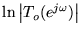

|
You are here : Control System Design - Index | Book Contents | Chapter 9 9. Frequency Domain Design LimitationsPreviewChapter 8 showed, via elementary time domain arguments based on the Laplace transform, that fundamental limitations exist on the achievable performance of linear control systems. For example, it was shown that real right half plane open loop plant zeros always lead to undershoot in the reference to output step response. Moreover, the extent of this undershoot increases as the response time of the closed loop system decreases. This implies that right half plane plant zeros place an inescapable upper limit on the achievable closed loop bandwidth if excessive undershoot is to be avoided. Similarly, it was shown that real right half plane open loop plant poles always lead to overshoot in one degree of freedom feedback systems. The purpose of the current chapter is to develop equivalent frequency domain constraints and to explore their interpretations. The results to be presented here have a long and rich history beginning with the seminal work of Bode published in his 1945 book on network synthesis. Since that time the results have been embellished in many ways. In this chapter we summarize the single input single output results. In Chapter 24 we will extend the results to the multivariable case. All of the results follow from the assumption that the sensitivity functions are analytic in the closed right half plane (i.e. that they are required to be stable). Analytic function theory then implies that the sensitivity functions cannot be arbitrarily specified but, indeed, must satisfy certain precise integral constraints. The necessary background to appreciate these results is elementary analytic function theory. Since this theory may not have been met by all readers previously we present a brief review in Appendix C. The current chapter can be read in one of two ways. Either, the background mathematics can be taken for granted, in which case the emphasis will be on the interpretation of the results. Alternatively, and preferably, the reader can gain a full appreciation by first reviewing the results given in Appendix C. The key result is the Cauchy Integral Formula and its immediate consequences - the Poisson Jensen Formula. Most of the results to be discussed below are based on cumulative (i.e. integral or summation) measures of and for continuous time systems, and of and  for discrete time functions. Logarithmic functions of sensitivity magnitudes have a sign change when these magnitudes cross the value unity. We recall that 1 is a key value in sensitivity analysis. Summary
Table 9.1 Integral constraints for SISO systems
|